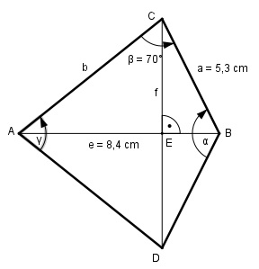

Aufgabe 161 Wie groß ist die Seite b des Drachenvierecks?

Im Dreieck ABC: Fall SSW: Sinussatz: e a ------- = --------- |*sin γ/2 sin β sin γ/2 e * sin γ/2 -------------- = a |*sin β sin β e * sin γ/2 = a * sin β |:e a * sin β sin γ/2 = ----------- = e 5,3 cm * sin 70° 5,3 cm * 0,9397 = ------------------ = ------------------ = 8,4 cm 8,4 cm = 0,5929 --> γ/2 = 36,4° γ = 72,8° α = 360° - 2*β – γ = 360ˆ- 140° - 72,8° = 147,2° Im Dreieck EBC: f/2 sin α/2 = ----- |*a a a * sin α/2 = f/2 |*2 f = 2 * a * sin α/2 = = 2 * 5,3 cm * sin 73,6° = 2 * 5,3 cm * 0,9593 = = 10,2 cm Im Dreieck AEC: f/2 sin γ/2 = ----- |*b b b * sin γ/2 = f/2 |:sin γ/2 f b = ------------- = 2 * sin γ/2 10,2 cm 10,2 cm = ---------------- = ------------ = 8,6 cm 2 * sin 36,4° 2 * 0,5934